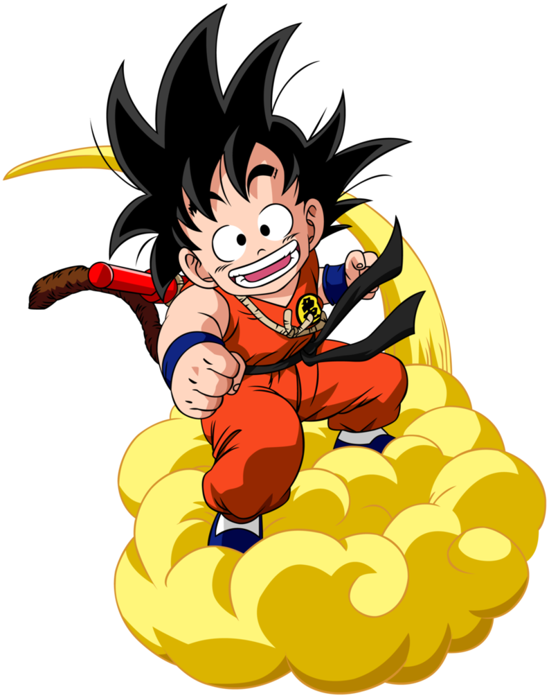

Baseada na série de livros "As Crônicas de Gelo e Fogo" de George R.R. Martin, Game of Thrones é uma série de televisão de drama e fantasia criada por David Benioff e D.B. Weiss. A série se passa em Westeros, um continente fictício onde as estações podem durar anos, e segue a luta de várias famílias nobres pelo Trono de Ferro dos Sete Reinos.
Imagem promocional de Game of Thrones
Enredo
A trama principal gira em torno da luta pelo poder entre as grandes Casas de Westeros. Enquanto as famílias nobres conspiram e batalham pelo controle do Trono de Ferro, uma antiga ameaça ressurge no Norte, além da Muralha: os Caminhantes Brancos, seres sobrenaturais que ameaçam toda a humanidade. Além disso, no continente de Essos, Daenerys Targaryen, a última descendente da antiga dinastia real, busca reunir um exército para reconquistar o trono de sua família.
Personagens Principais
Daenerys Targaryen: Conhecida como a "Mãe dos Dragões", busca restaurar a dinastia Targaryen.
Jon Snow: Filho bastardo de Eddard Stark, que se junta à Patrulha da Noite e descobre sua verdadeira linhagem.
Tyrion Lannister: Um anão inteligente e perspicaz da rica e poderosa Casa Lannister.
Cersei Lannister: A ambiciosa e implacável rainha dos Sete Reinos.
Arya Stark: A filha mais nova de Eddard Stark, que se torna uma assassina habilidosa.
Dragon Ball
Criado por Akira Toriyama, Dragon Ball é uma franquia de mídia japonesa que começou como uma série de mangá em 1984. A história segue as aventuras de Son Goku, desde sua infância até a idade adulta, enquanto ele treina artes marciais e explora o mundo em busca das sete esferas mágicas conhecidas como Esferas do Dragão.

Son Goku em Dragon Ball
Sagas
A franquia Dragon Ball é dividida em várias sagas, cada uma com seus próprios arcos de história e vilões:
Dragon Ball: A série original foca nas aventuras de Goku criança, sua busca pelas Esferas do Dragão e seus primeiros torneios de artes marciais.
Dragon Ball Z: Goku, agora adulto, descobre que é um Saiyajin, uma raça de guerreiros extraterrestres. Esta fase é marcada por batalhas épicas contra inimigos poderosos como Freeza, Cell e Majin Boo.
Dragon Ball Super: Continuação canônica de Dragon Ball Z, a série apresenta novas transformações, deuses da destruição e universos alternativos.
Personagens Principais
Son Goku: O protagonista da série, um Saiyajin de coração puro que adora lutar e proteger a Terra.
Vegeta: O príncipe dos Saiyajins, que começa como um vilão e se torna um dos maiores aliados de Goku.
Gohan: O primeiro filho de Goku, que possui um grande potencial de luta.
Piccolo: Um Namekuseijin que era um inimigo de Goku, mas se torna um de seus amigos mais próximos e mentor de Gohan.
Bulma: Uma cientista brilhante e amiga de longa data de Goku, que o ajuda em suas aventuras com suas invenções.